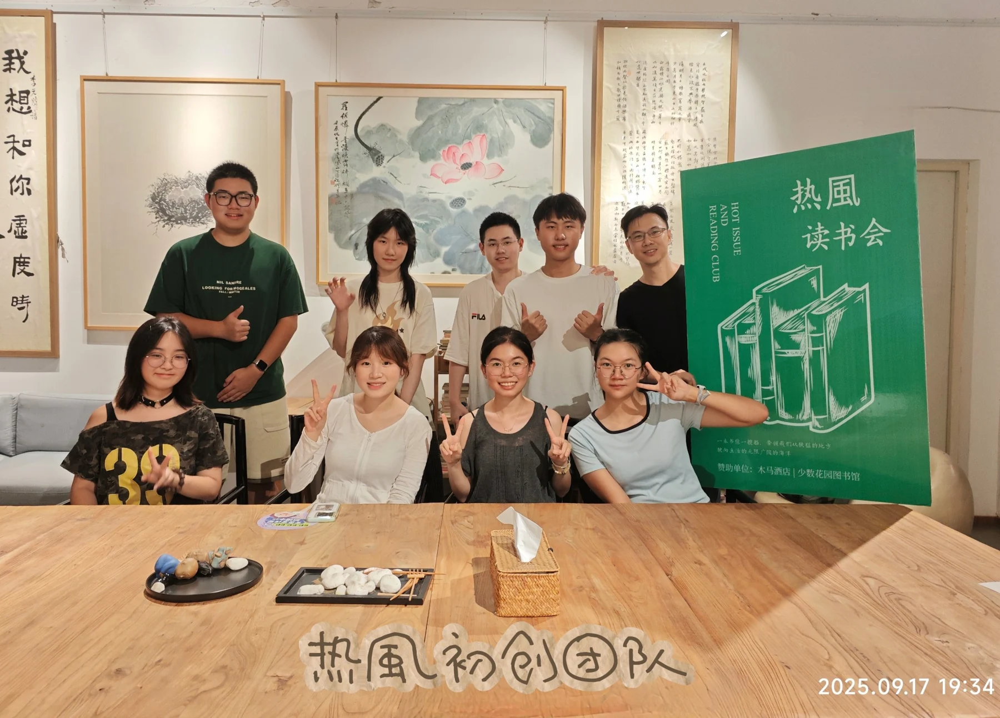

A YOUTH COMMUNITY, BUILT TOGETHER
Good ideas. Great company. A student-led community bringing people together through reading, discussion and shared activities.
✳ 
Hotwind team photograph beside the reading-club display. 热風 room to grow
READ TOGETHER ✳ ASK BETTER QUESTIONS ✳ MAKE YOURSELF HEARD ✳ TURN IDEAS INTO EXPERIENCES
30+ activities organised Across reading, dialogue and health communication
~20 weeks of shared reading Approximate total reported by the founder
9 people in the core team A small team with shared responsibilities
Totals reported by the founder for 2024–2025; the archive contains selected examples.
FROM ONE TABLE TO A COMMUNITY
Start small. Listen carefully. Keep growing. Hotwind began as a reading salon. Its direction changed as we tested ideas, recognised our limits and listened to what a student community could become.
Read our story ↗ 2024.01 Start with a reading salon
2024.04 Test a bigger idea
2024.07 Reflect, then rebuild
2025 Explore wider connections